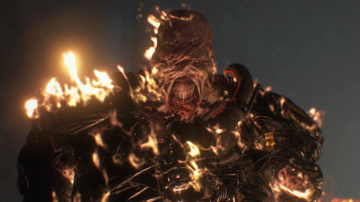
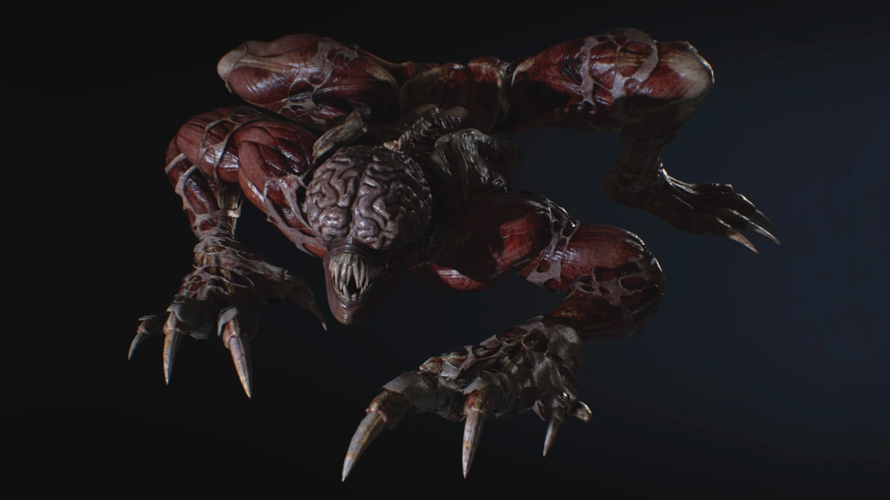

Bestiaire : Zombies & Armes Bio-Organiques

Nemesis (T-Type)
Origine : Parasite NE-Alpha + Virus-T
Arme biologique intelligente conçue pour traquer et assassiner méthodiquement tous les membres survivants des S.T.A.R.S.

Mr. X (Tyrant T-103)
Origine : Série des Tyrants de mass-production
B.O.W. humanoïde indestructible vêtu d'un trench-coat étanche, envoyé en mission d'infiltration pour nettoyer toute trace compromettante à Raccoon City.

Le Licker (Lécheur)
Origine : Mutation secondaire du Virus-T
Créature humanoïde ayant perdu sa peau, aveugle mais dotée d'une ouïe surdéveloppée, de griffes mortelles et d'une longue langue extensible.